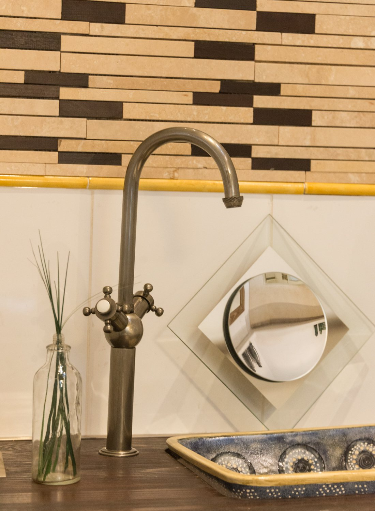
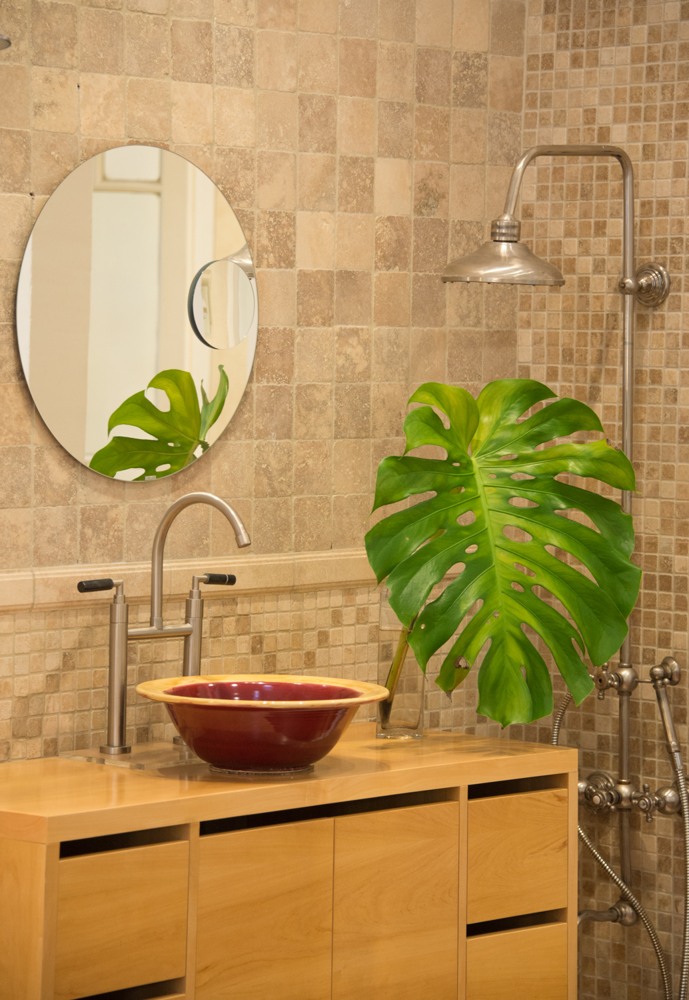
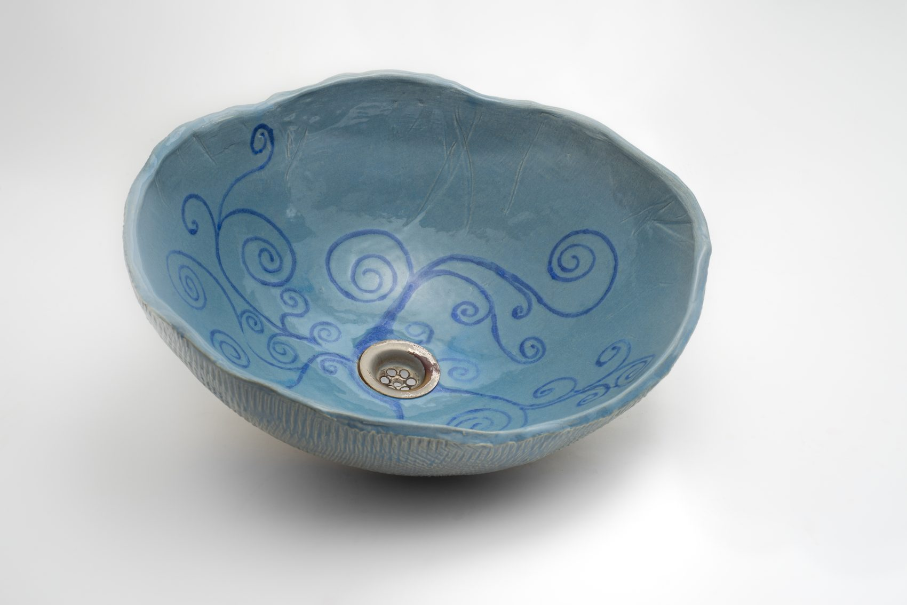
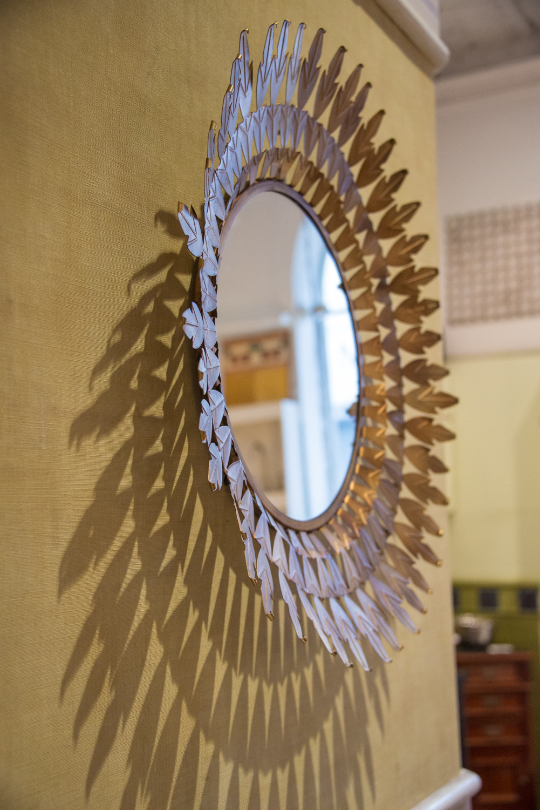
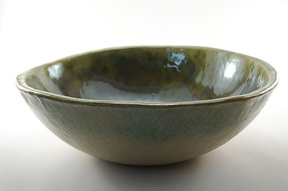
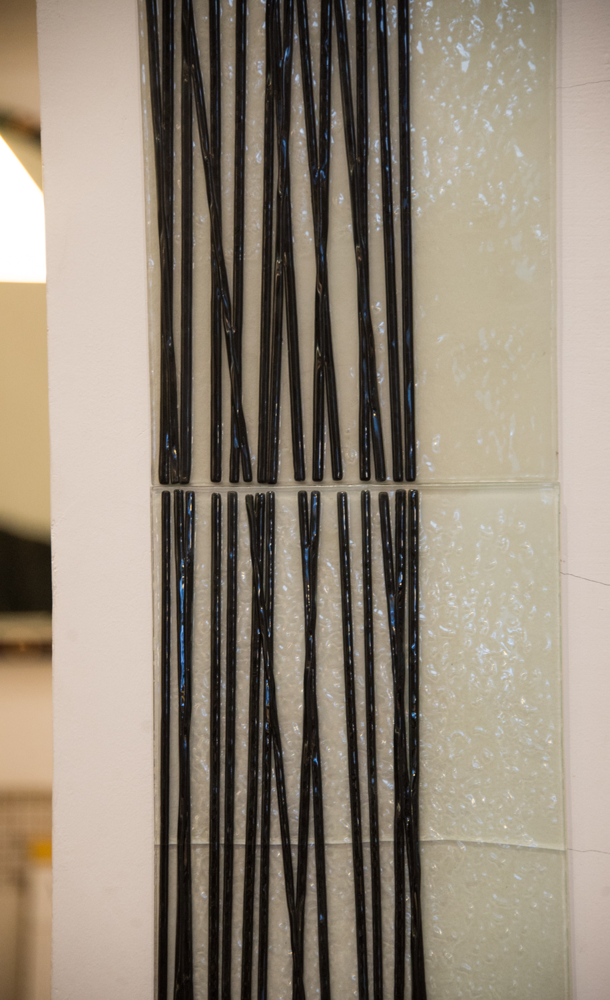
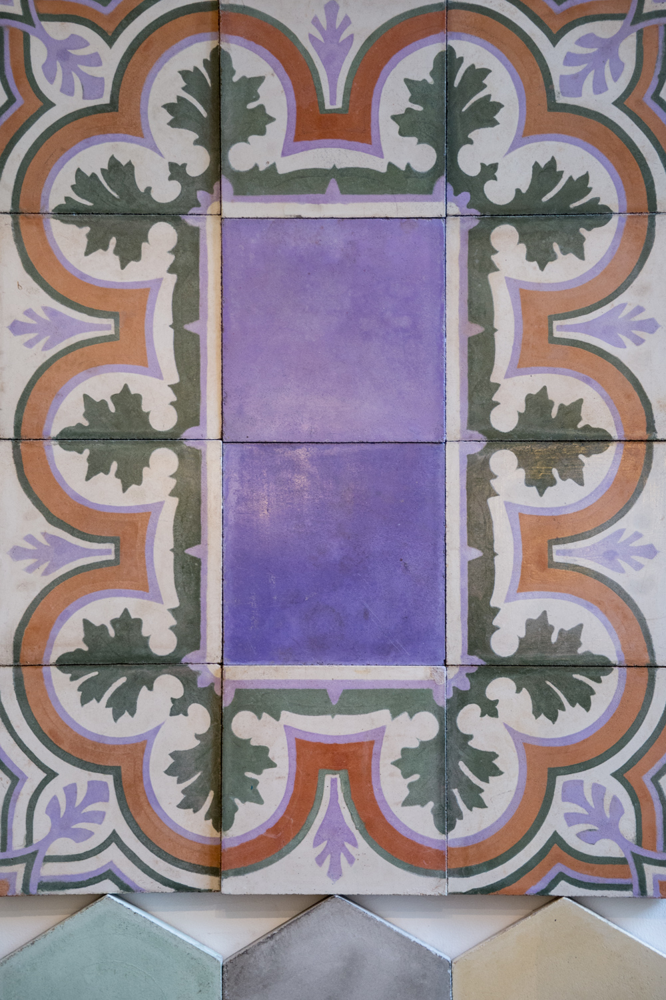
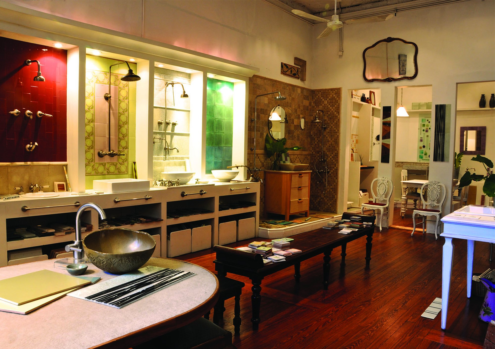
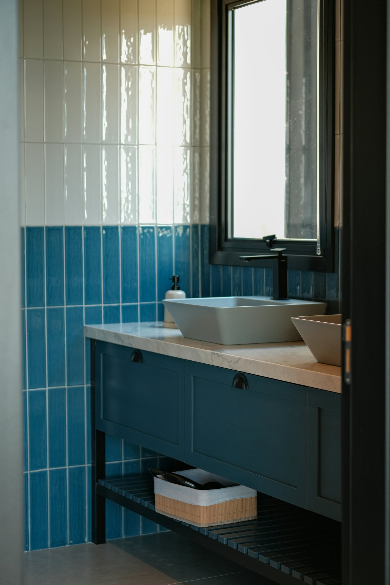

Grifería de bronceForjada a mano
Piezas de cerámica y grifería hechas a mano, con diseño de autor para cada proyecto.
Los mejores artesanos diseñan y modelan bajo la guía de Marita. La grifería se produce sólo para nosotros, con los más altos estándares. El resultado es una colección de objetos elegidos bajo una misma estética.
Nuestra historia y oficioCinco familias de objetos que conversan entre sí. Tocá cada una para ver la colección.
Cada bacha se modela y se pinta a mano. Un catálogo de piezas irrepetibles.








Arrastrá para explorar →

El local · Ugarteche 3146, PalermoMarita, artista plástica y ceramista, recibe el pedido de una amiga belga para pintar los azulejos de su cocina. Del boca en boca nació todo lo demás.
Nuestra historiaModelamos, horneamos y pintamos cada pieza. La grifería se fabrica sólo para nosotros: calidad y plazos que son, desde hace años, una referencia en el mercado.
Cada proyecto nace de una conversación. En una cita conocemos tu espacio, tu estilo y tu manera de habitar el baño, para crear piezas hechas a mano, pensadas para tu casa y para nadie más.
